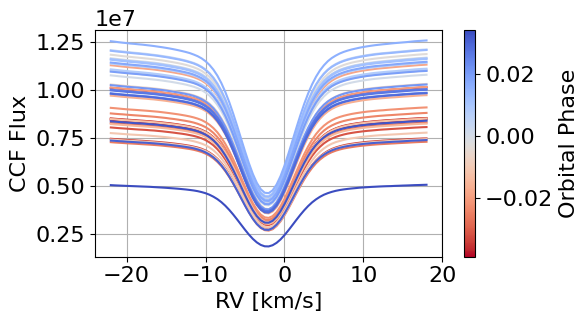
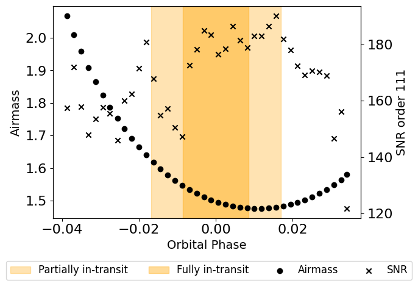
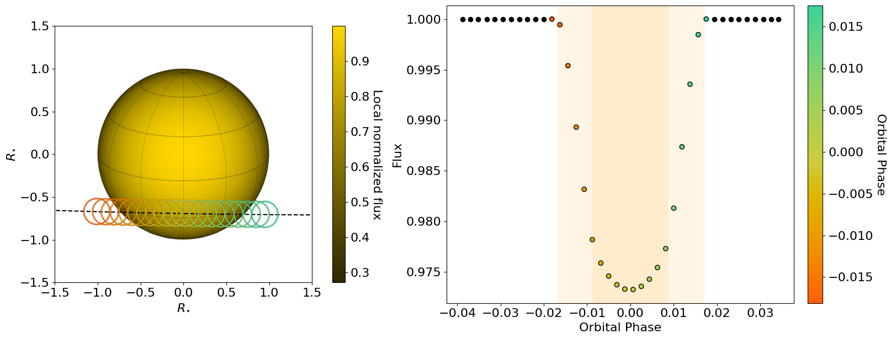
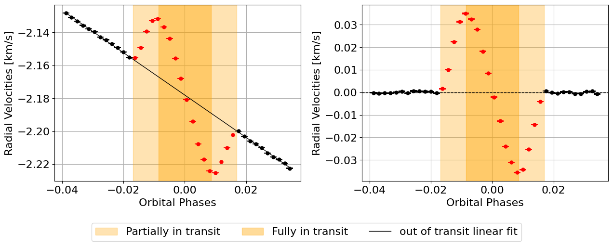
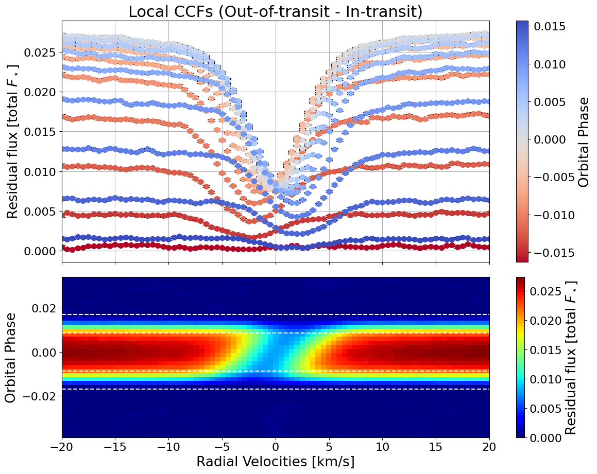
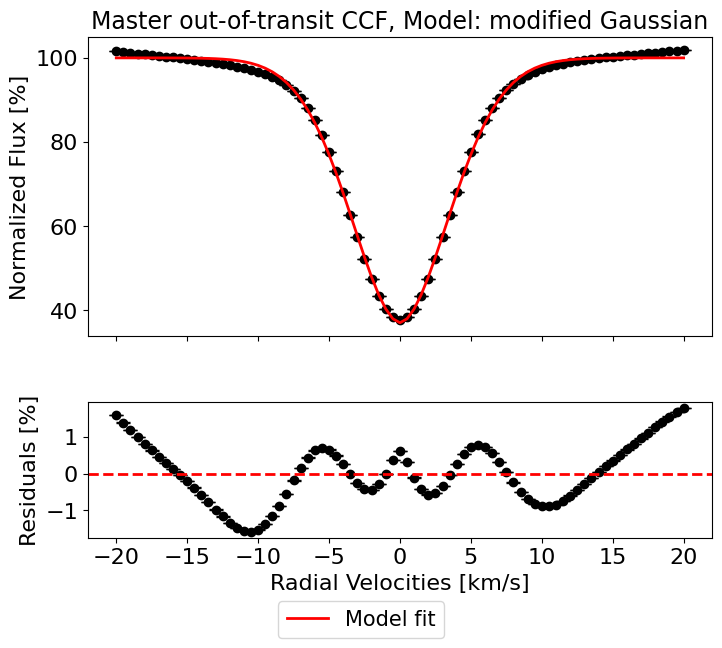
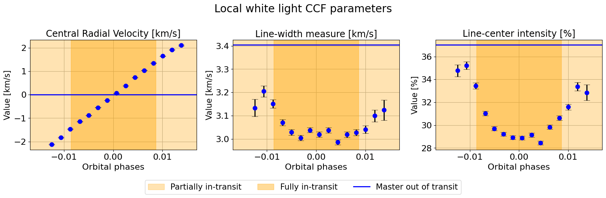
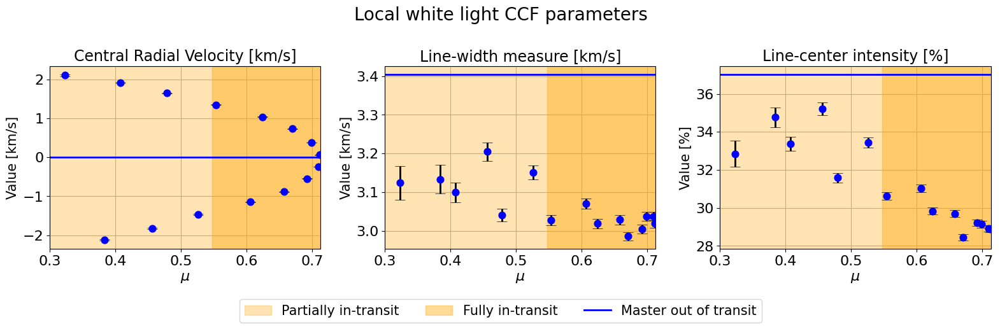
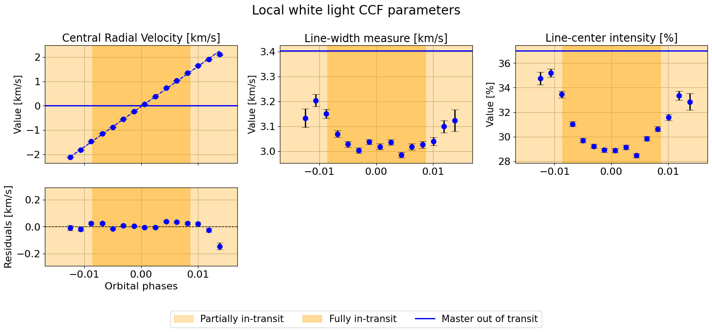
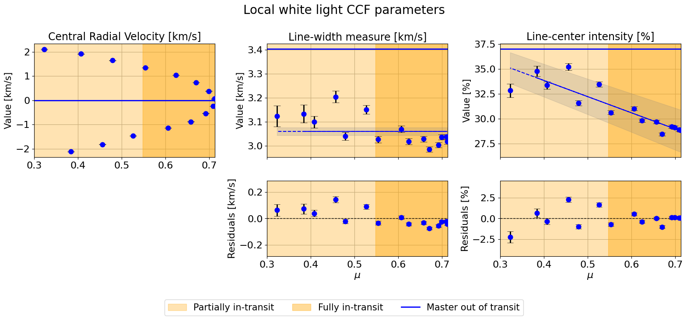

White light CCF of HD 189733
In this notebook, we present a simple example of the application of the Doppler Shadow technique to ESPRESSO observations of HD 189733, a K1V star, extracting the white light CCF provided by the DRS.
[1]:
import numpy as np
from HECATE.HECATE import HECATE # main class
from HECATE.get_data import * # to retrieve the data
from HECATE.plots import * # to plot the airmass and SNR
Warming up JIT-compiled functions...
Below we list the stellar, planetary and orbital parameters, as used in Cristo et al. (2024) and Gonçalves et al. (2026).
[2]:
stellar_params = {
"Teff":4969, "Teff_err":43, #effective temperature [K]
"logg":4.60, "logg_err":0.01, #superficial gravity [dex]
"FeH":-0.07, "FeH_err":0.02, #metallicity [dex]
"P_rot":2.21857312, #rotation period [d]
"R_star":0.766, #radius [solar radii]
"inc_star":71.87 #stellar inclination [º]
}
planet_params = {
"P_orb":2.21857312, #orbital period [d]
"a_R":8.76863, #system scale [stellar radii]
"Rp_Rs":0.1602, #planet-to-star radius ratio
"t0":53988.30339, #mid-transit time [d]
"e":0, #orbital eccentricity
"w":90, #argument of periastron [º]
"inc_planet":85.465, #planet inclination [º]
"lbda":-1.00, #spin-orbit angle [º]
"dfp": -0.002424 #mid-transit phase shift, night of 2021-09-11
}
Now we extract the CCFs from the example data provided.
[3]:
CCFs, time, airmass, berv, bervmax, snr, list_ccfs = get_CCFs(planet_params, stellar_params,
day='2021-08-11',
directory_path="HD189733_ESPRESSO_white_light_ccfs")
Need to download 11 files, approximately 3.67 MB

[4]:
plot_air_snr(planet_params, stellar_params, time, airmass, snr)

Now we call an instance of HECATE, giving the parameters and data, where the simulation of the transit with SOAP will take place.
[5]:
hecate = HECATE(planet_params, stellar_params, time, CCFs, spectra=None, plot_soap="SOAP")

To extract the local CCF, we just need to select the model to fit, the CCF type and the options for plotting.
[6]:
plot = {"fits_initial_CCF":False, # plot the initial fits to the CCFs
"sys_vel_ccf":True, # plot the systemic velocity of the star in the CCFs
"master_out_of_transit":False, # plot the master out-of-transit CCF
"local_CCFs":True, # plot the local CCFs
"photometrical_rescale":False # if the local CCFs are rescaled by the photometric transit model
}
ccf_type = "white light"
model_fit = "modified Gaussian"
[7]:
local_data = hecate.extract_local_CCF(model_fit, plot, save=None)


Tah-dah! We have the local white-light CCFs.
Now we can use HECATE to fit a profile to them, and extract the local parameters (central RV, line-center intensity, line-width measure) in function of \(\mu\) or \(\phi\).
[8]:
master_results = hecate.get_profile_parameters(profiles=local_data['master_out_of_transit_CCF'],
data_type="CCF",
observation_type="master",
model="modified Gaussian",
print_output=True,
plot_fit=True)
##################################################
Fitting modified Gaussian model to master CCF profile
--------------------------------------------------
Fit parameters:
y0 = 0.999697 ± 0.000005
x0 = -0.000300 ± 0.000049
sigma = 3.404600 ± 0.000090
a = 0.629519 ± 0.000011
c = 1.823841 ± 0.000085
R^2: 0.9983
--------------------------------------------------
Profile parameters:
Central RV [km/s]: -0.000300 ± 0.000049
Continuum: 0.999697 ± 0.000005
Line-center intensity [%]: 37.028979 ± 0.001098
Line-width measure [km/s]: 3.404600 ± 0.000090

[9]:
local_results = hecate.get_profile_parameters(profiles=local_data['local_CCFs'],
data_type="CCF",
observation_type="local",
model="modified Gaussian",
print_output=False,
plot_fit=False)
Having all the fits, we select the data based on quality – \(R^2 > 0.95\) and \(\mu \geq 0.3\).
[10]:
indices_final = np.array(list(set(np.where(local_results['R2'] >= 0.95)[0]).intersection(set(np.where(hecate.mu_in >= 0.3)[0]))))
local_params = [local_results['central_rv'], local_results['width'], local_results['intensity']]
master_params = [master_results['central_rv'], master_results['width'], master_results['intensity']]
hecate.plot_local_params(indices_final, local_params, master_params, suptitle=r"Local white light CCF parameters")


We can fit a linear model via nested sampling by running the same function.
[11]:
hecate.plot_local_params(indices_final, local_params, master_params,
suptitle=r"Local white light CCF parameters",
linear_fit_pairs=[("phases", 0), ("mu", 1), ("mu", 2)])
==================================================
Central Radial Velocity [km/s]
----------------------------------------
Orbital phases
19239it [00:28, 676.44it/s, batch: 7 | bound: 5 | nc: 1 | ncall: 396882 | eff(%): 4.717 | loglstar: 41.160 < 46.524 < 46.157 | logz: 30.296 +/- 0.111 | stop: 0.899]
14894it [00:18, 797.75it/s, batch: 7 | bound: 4 | nc: 1 | ncall: 284664 | eff(%): 5.046 | loglstar: -18.271 < -12.590 < -13.627 | logz: -19.548 +/- 0.065 | stop: 0.882]
------------------------------
Linear vs Constant
logZ(linear) = 30.295 ± 0.099
logZ(constant) = -19.563 ± 0.061
log Bayes factor = 49.858
Unconstrained model favored.
------------------------------
17613it [00:25, 681.95it/s, batch: 6 | bound: 3 | nc: 1 | ncall: 359556 | eff(%): 4.753 | loglstar: 41.494 < 46.513 < 45.510 | logz: 31.213 +/- 0.108 | stop: 0.973]
17143it [00:22, 745.75it/s, batch: 6 | bound: 5 | nc: 1 | ncall: 348365 | eff(%): 4.770 | loglstar: -18.703 < -11.118 < -13.228 | logz: -22.307 +/- 0.086 | stop: 0.803]
Positive vs Negative slope
===========================
logZ(m>0) = 31.216 ± 0.101
logZ(m<0) = -22.282 ± 0.080
log Bayes factor = -53.498
Positive slope favored.
==========================
Linear fit parameters:
m = 165.512291 +/- 1.376558
b = -0.037499 +/- 0.004548
ln_f = -3.527677 +/- 0.231554
------------------------------
==================================================
Line-width measure [km/s]
----------------------------------------
$\mu$
19078it [00:28, 664.22it/s, batch: 6 | bound: 3 | nc: 1 | ncall: 393020 | eff(%): 4.722 | loglstar: 35.565 < 40.562 < 39.595 | logz: 22.507 +/- 0.117 | stop: 0.971]
17788it [00:24, 728.02it/s, batch: 8 | bound: 3 | nc: 1 | ncall: 348962 | eff(%): 4.949 | loglstar: 29.822 < 34.764 < 34.346 | logz: 23.648 +/- 0.080 | stop: 0.850]
------------------------------
Linear vs Constant
logZ(linear) = 22.516 ± 0.109
logZ(constant) = 23.636 ± 0.075
log Bayes factor = -1.121
Zero-slope model favored
========================
Linear fit parameters:
b = 3.060948 +/- 0.016099
ln_f = -3.956642 +/- 0.220138
------------------------------
==================================================
Line-center intensity [%]
----------------------------------------
$\mu$
16104it [00:23, 679.65it/s, batch: 6 | bound: 3 | nc: 1 | ncall: 325479 | eff(%): 4.786 | loglstar: -11.966 < -6.876 < -7.860 | logz: -18.697 +/- 0.092 | stop: 0.960]
15314it [00:21, 723.52it/s, batch: 8 | bound: 3 | nc: 1 | ncall: 294160 | eff(%): 5.027 | loglstar: -24.271 < -19.246 < -19.782 | logz: -26.904 +/- 0.067 | stop: 0.900]
------------------------------
Linear vs Constant
logZ(linear) = -18.706 ± 0.086
logZ(constant) = -26.921 ± 0.064
log Bayes factor = 8.216
Unconstrained model favored.
------------------------------
17061it [00:22, 762.38it/s, batch: 6 | bound: 4 | nc: 1 | ncall: 347511 | eff(%): 4.759 | loglstar: -25.496 < -19.266 < -20.672 | logz: -31.173 +/- 0.091 | stop: 0.851]
16805it [00:23, 702.16it/s, batch: 7 | bound: 5 | nc: 1 | ncall: 341189 | eff(%): 4.772 | loglstar: -12.439 < -6.861 < -7.229 | logz: -18.079 +/- 0.090 | stop: 0.896]
Positive vs Negative slope
===========================
logZ(m>0) = -31.161 ± 0.085
logZ(m<0) = -18.079 ± 0.080
log Bayes factor = 13.082
Negative slope favored.
==========================
Linear fit parameters:
m = -16.218185 +/- 2.272270
b = 40.334972 +/- 1.370246
ln_f = -3.455295 +/- 0.219484
------------------------------

